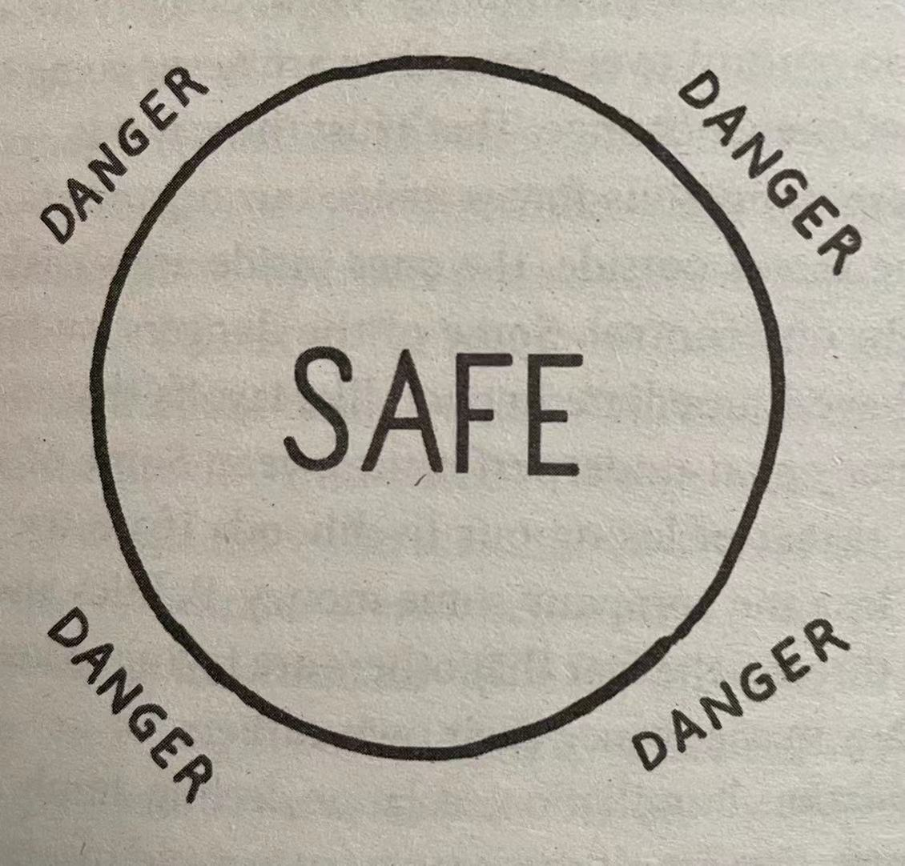

FOREWORD
VIIII In Leaders Eat Last, Simon Sinek does not propose any new leadership theory or core principle. He has a much higher purpose to his writing. Simon would like to make the world a better place for all of us. His vision is simple: to create a new generation of men and women who understand that an organization's success or failure is based on leadership excellence and not managerial acumen (精明管理).
It is not an accident that Simon uses the U.S. military, and in particular the United States Marine Corps, to explain the importance of leaders being focused on their people. These organizations have strong cultures and shared values, understand the importance of teamwork, create trust among their members, maintain focus, and, most important, understand the importance of people and relationships to their success. The organizations are also in a position where the cost of failure can be catastrophic (灾难性的).
. When you are with Marines gathering to eat, you will notice that the most junior are served first and the most senior are served last. When you witness this act, you will also note that no order is given. Marines just do it.
X Great leaders truly care about those they are privileged to lead and understand that the true cost of the leadership privilege comes at the expense of self-interest.
. Simply stated, it is not enough to be a good leader; good leaders must truly care about those entrusted (托付) to their care.
. "If you actions inspire others to dream more, do more and become more, you are a leader."
. When leaders inspire those they lead, people dream of a better future, invest time and effort in learning more, do more for their organizations and along the way become leaders themselves. A leader who takes care of their people and stays focused on the well-being of the organization can never fail.
PART 1: OUR NEED TO FEEL SAFE
1. Protection from Above
The Value of Empathy 8 We raise our hands for recognition and reward. For most of us, the more recognition we get for our efforts from those in charge, the more successful we think we are.
. For Jonny Bravo and those like him, the will to succeed and the desire to do things that advance the interests of the organization aren't just motivated by recognition from above, they are integral (的组成部分) to a culture of sacrifice and service, in which protection comes from all levels of the organization.
. Ask any of the remarkable men and women in uniform who risk themselves for the benefit of others why they do it and they will tell you the same thing: "Because they would have done it for me."
9 And when that happens, when those kinds of bonds are formed, a strong foundation is laid for the kindness of success and fulfillment that no amount of money, fame or awards can buy. This is what it means to work in a place in which the leaders prioritize the well-bing of their people and, in return, their people give everything they've got to protect and advance the well-being of one another and the organization.
. There is a pattern that exists in the organizations that achieve the greatest success, the ones that outmaneuver (胜出) and outinnovate（创新超越） their competitors, the ones that command the greatest respect from inside and outside their organizations, the ones with the highest loyalty and lowest churn and the ability to weather nearly every storm or challenge.
. This is the reason they are willing to push hard and take the kinds of risks they do. And the way any organization can achieve this is with empathy.
2. Employees Are People Too
11 As he did with every company he acquired, he started by sitting down to hear what employees had to say.
. "First of all," Campbell asked, "if I tell the truth, will I still have a job tomorrow?" Chapman smiled. "If you have any trouble tomorrow about what you say today," he assured him, "you give me a call."
12 No matter how much effort they put in, those who stood by the machines didn't feel like the company trusted them simply because they stood on a factory floor instead of sitting at desks.
. Preferring to see everyone as human instead of as a factory worker or office employee, Chapman made others changes so that everyone would be treated the same way.
13 Every employee would be treated the same way regardless of whether they worked in the administrative offices or on the factory floor. This was going to be the new normal.
. They felt like they belonged and that enabled them to relax and feel valued. People started to care for others as they felt cared for. This caring environment allowed people to fully engage "their heads and hearts," as Chapman likes to say, and the organization began to thrive.
. "When you have people who trust you, they're going to do a better job for you to earn or keep that trust."
14 Without coercion (强迫), pressure or force, the people naturally work together to help each other and advance the company. Working with a sense of obiligation (义务, 职责) is replaced by working with a sense of pride. And coming to work for the company is replaced by coming to work for each other. Work is no longer a place to dread (恐惧). It's a place to feel valued.
We See What We Want to See 15 Up until the day, Chapman had been exactly the kind of executive we teach our MBAs to be. He was good with numbers and he loved the game of business. He made decision based on data, market conditions and financial opportunities.
. He thought business was something that was measured on spreadsheets, and he saw people as one of the many assets he had to manage to help him achieve his financial goals. And as that kind of executive, he was very effective.
16 But based on what Chapman saw that morning, he realized that he and his team had the power to make the company a place people wanted to go every day. So he set out to create an environment in which people felt they could express themselves honestly and be recognized and celebrated for their progress. This is the basis of what Chapman calls truly human leadership.
Whn the people have to manage dangers from insider the organization, the organization itself become less able to face the dangers from outside.
17 The systems inside us that protect us from danger and encourage us to repeat behaviour in our best interest respond to the environments in which we live and work. If we sense danger our defenses go up. If we feel safe among our own people, in our own tribes or organizations, we relax and are more open to trust and cooperation.
. Chapman and others like him didn't set out to change their employees -- they set out to change the conditions in which their employees operate. To create cultures that inspire people to give all they have to give simply because they love where they work.
18 In our modern world, advancing our careers and trying to find happiness and fulfillment are the definition of success. But the systems inside us that guide our behavior and decision still function as they did tens of thousands of years ago.
. A business environment with an unbalanced focus on short term results and money before people affects society at large .
The Awesome Responsibility 19
Every single employee is someone's son or someone's daughter. Like a parent, a leader of a company is responsible for their precious lives.
20 And if we are successful, our people will take on our company's name as a sign of the family to which they are loyal.
. Leaders of organization who create a working environment better suited for how we are designed do not sacrifice excellence or performance simply because they put people first. Quite the contrary. The organization are among the most stable, innovative and high-performing companies in their industries. Sadly, it is more common for leader of companies to see the people as the means to drive the numbers. The leader of great organizations do not see people as a commodity to be managed to help grow the money. They see the money as the commodity to be managed to help grow their people. This is why performance really matters. The better the organization performs, the more fuel there is to build an even bigger, more robust organization that feeds the hearts and souls of those who work there. In return, their people give everything they've got to see the organization grow ... and grow ... and grow.
. There is no value in building organization that compound that danger by adding more threats from the inside.
3. Belonging
From "Me" to "We" 23 "FROM THIS DAY on," he shouted, "words like 'I', 'me', 'my' will no longer be in your vocabulary. They will be replaced with words like 'we', 'together' and 'us.'"
This is how it begins.
24 This feeling of belonging, of shared values and a deep sense of empathy, dramatically enhances trust, cooperation and problem solving.
The Circle of Safety
25 Those things are not what make high-performing groups perform so remarkably. The ability of a group of people to do remarkable things hinges (铰链) on how well those people pull together as a team.
27
Letting someone into an organization is like adopting a child.
28 As gatekeepers, leaders establish the standards of entry -- who should be allowed into the Circle and who should be kept out, who belongs and who doesn't.
. Weak leaders are the ones who extended the benefits of the Circle of Safety only to their fellow senior executives and a chosen few others. They look out for each other, but they do not offer the same considerations to those outside their "inner circle". Without the protection of our leaders, everyone outside the inner circle is forced to work alone or in small tribes to protect and advance their own interests. And in so doing, silos form, politics entrench (牢固确立), mistakes are covered up (掩盖) instead of exposed, the spread of information slows and unease (不安) soon replaces any sense of cooperation and security.
29 Strong leaders, in contrast, extend the Circle of Safety to include every single person who works for the organization. Self-preservation (自我保护) is unnecessary and fiefdoms (封邑,领地) are less able to survive. With clear standards for entry into the Circle and competent layers of leadership that are able to extend the Circle's perimeter (边缘), the stronger and better equipped the organization becomes.
It is easy to know when we are in the Circle of Safety because we can feel it. We feel valued by our colleagues and we feel cared for by our superiors (上司). We become absolutely confident that the leaders of the organization and all those with whom we work are there for us and will do that they can help to help us succeed. We become members of the group. We feel like we belong. When we believe that those inside our group, those inside the Circle, will look out for us, it creates an environment for the free exchange of information and effective communication. This is fundamental to driving innovation, preventing problems from escalating and making organizations better equipped to defend themselves from the outside dangers and to seize the opportunities.
Absent a Circle of Safety, paranoia (妄想, 偏执, 多疑), cynicism (愤世嫉俗) and self-interest prevail (盛行). The whole purpose of maintaining the Circle of Safety is so that we can invest all our time and energy to guard against the dangers outside. It's the same reason we lock our doors at night. Not only does feeling safe inside give us peace of mind, but the positive impact on the organization itself is remarkable. When the Circle is strong and that feeling of belonging is ubiquitous (无处不在), collaboration, trust and innovation result.
This is an important point. We cannot tell people to trust us. We cannot instruct people to come up with big ideas. And we certainly can't demand that people cooperate. These are always results -- the results of feeling safe and trusted among the people with whom we work. When the Circle of Safety is strong, we naturally share ideas, share intelligence and share the burdens of stress. Every single skill and strength we have is amplified to better compete and face the dangers in the world outside and advance the organization's interests vastly more effectively.
30 But there is a twist.
Leaders want to feel safe too. No matter what place we occupy in the pecking order, every single one of us wants to feel like we are valued by others in the group.
4. Yeah, but ...
31 The kind of idealism I speak about is fine for books that wax on (上蜡) about what our jobs could be like, but he reality is most of us, even if inspired by stories of companies like Barry-Wehmiller, aren't in a position to change any thing. We have bills to pay. We have kids to feed. College educations to fund. There is just too much on our plates. And the world out there, the great unknown, is a dangerous place. So we stay put.
32 But the reality of running a business, big or small, private or public, makes it nearly impossible to do the things folks like me write about. The pressure from Wall Street, corporate boards and the threats from our competition are intense.
. For any organization that is looking to hit annual goals or simply stay alive, the choice to put people first just can't be priority. And understandably so. The threats from the outside are just too great to worry about how people feel inside.
. So why change? But there is always a cost for the decision we make.
. We convince ourselves that the outside, the unknown, is always dangerous (which it is). At least inside there is a hope of feeling secure. A hope ...
33 Levels of depression and anxiety among people who are unhappy at work were the same or greater than those who were unemployed.
34 Meaning, even if we're getting criticized, we are actually more engaged simply because that we feel at least someone is acknowledging that we exist!
The Whitehall Stuidies 35 Researchers found that workers' stress was not caused by a higher degree of responsibility and pressure usually associated with rank.
. The studies also found that the effort required by a job is not in itself stressful, but rather the imbalance between the effort we give and the reward we feel. Put simply: less control, more stress.
36 What this means is that the converse is also true. A supportive and well-managed work environment is good for one's health. Those who feel they have more control, who feel empowered to make decisions instead of waiting for approval, suffer less stress. Those only doing as they are told, always forced to follow the rules, are the ones who suffer the most.
37 Maybe it's the feeling of the devil-you-know-is-better-than-the-devil-you-don't or maybe it's something else, but people seem to feel stuck in unhealthy work environments.
38 Like the Spartans (斯巴达), we will have to learn that our strength will come not from sharpness of our spears but from our willingness to offer others the protections of our shields.
. In other words, form a strictly business standpoint, treating people well in any economy is more cost effective than not.
. A study by two researchers at the Graduate School of Social Work at Boston College found that a child's sense of well-being is affected less by the long hours their parents put in at work and more by the mood their parents are in when they come home Children are better off (境况较好) having a parent who works shorter hours but comes home unhappy.